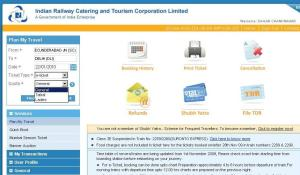
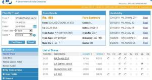
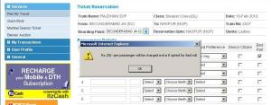

भारतीय रेल केटरिंग एवं टुरिस्म कॉर्पोरेशन (IRCTC) ने अपनी बोरिंग साईट को बेहतर बनाने की दिशा में प्रयास चालू कर दिया है। उसकी नई साईट जो कि अभी बीटा वर्जन में है, (प्रयोग के लिये चालू है) का इन्टरफेस तो बढ़िया है ही, कुछ सुविधाओं में थोड़ा फेरबदल करने से साईट एकदम सुविधाजनक हो गई है। आईये चित्रों के माध्यम से देखें। 
Plan my Travels के कॉलम में “कोटा” के अन्तर्गत पहले पन्ने पर ही लेडिज कोटा का ऑप्शन जोड़ दिया है, जो कि पहले दूसरे पन्ने (Booking वाले)पर था। इससे पता नहीं चलता था कि फलाणा ट्रेन में लेडिज कोटा है या नहीं। अगर नहीं है तो रिजल्ट नहीं आयेगा, लेकिन इस नये जालस्थल में उस दिन चलने वाली सारी ट्रेन में लेडिज कोटा के बारे में बता देगा, जिससे बुकिंग करने में पहले से बहुत सुविधा होगी।

1A, FC, 2A, 3A, 3E, CC, SL और 2S क्लास में सीट की उपलब्धता के लिये आपको बार बार ऑप्शन बदल कर Find Trains पर क्लिक करने की आवश्यकता नहीं होगी। 

Find Train पर क्लिक करने के बाद जो लिस्ट आद्ती है में .. Train के सामने बने खाने में क्लिक करते ही सीट की उप्लब्धता, किराया, टाइम टेबल , दोनों स्टेशन की दूरी आदि जानकारी मिल जायेगी…Fare summary पर माऊस ले जाते ही किराये का विवरण मिल जायेगा.. …..चित्र देखें)

पहले ट्रेन के रास्ते के बारे में जानने के लिये Show Route पर क्लिक करना होता था, अब Train Name पर क्लिक करते ही पूरे रास्ते की जानकारी मिल जायेगी। बुकिंग वाले पेज पर Food Preference पर क्लिक करने से आप अपनी पसंद का सामिष या निरामिष भोजन पा सकेंगे।

Bed Roll पर क्लिक करने के बाद आप 25/- दे कर बेड रोल भी पा सकेंगे। ( ये दो सुविधायें शायद सभी ट्रेनों में नहीं होगी)
और भी कई सुविधायें है जो कि टिकट बुक करते समय पता चलेगी। फिलहाल जो कुछ बदलाव हुआ है वह भी बहुत अच्छा दिख रहा है।
और सुविधाओं के बारे में जानने के लिये यहां क्लिक करें… http://www.irctc.co.in/cgi-bin/beta.dll/irctc/services/home.do